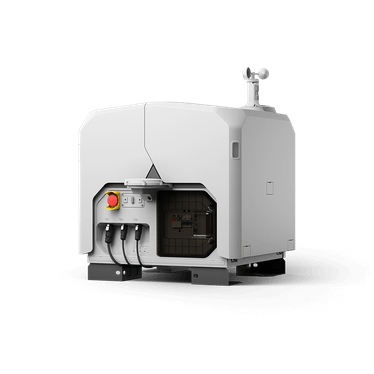
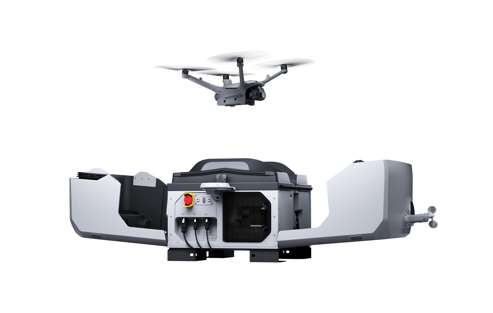

DJI Dock 3
Every DIMS mission starts and ends inside a weatherproof box on a rooftop. The DJI Dock 3 is the home, garage, charger and launchpad for our drone — so the whole point of DIMS (a drone that inspects by itself, with no one in the field) only works because this box exists.
What a “dock” even is
A dock is a drone-in-a-box: a self-contained station that stores a drone, charges it, shelters it from weather, and opens up to launch and recover it automatically. No pilot drives out, no one unpacks a drone from a case — the dock sits permanently on site and the drone lives inside it.
Think of a robot vacuum and its charging dock. The vacuum leaves on a schedule, cleans, and returns to its base to recharge — you never touch it. The DJI Dock 3 is that base, except the “vacuum” is an inspection drone, the “floor” is a forest or a tower crane, and the base is a 55-kilogram weatherproof station built to survive years outdoors.
The DJI Dock 3 is DJI’s third-generation dock. It houses a single Matrice 4D-series drone, and DIMS commands a real Dock 3 remotely over the DJI Cloud API — the messaging protocol we cover in chapter 11. That remote command is what makes BVLOS (Beyond Visual Line Of Sight — flying where no operator can physically see the drone) possible.


The launch → fly → land → charge cycle
Here is the loop the dock runs every mission, fully unattended:
- Wake & check. DIMS sends a flight task. The dock runs self-checks, reads its RTK position fix, and confirms the weather is safe to fly.
- Open. The two-piece cover slides apart, exposing the landing pad with the drone on it.
- Launch. The drone powers up, spins its props, and takes off straight up out of the open dock.
- Fly the mission. The drone flies its wayline autonomously, streaming live video and telemetry back to DIMS.
- Return & land. When done (or low on battery), the drone runs RTH — Return To Home — and lands precisely back on the pad, guided by RTK to centimetre accuracy.
- Close & charge. The cover closes over the drone and the dock recharges it, ready for the next flight.
The dock is small and the cover has to close over the drone exactly. A normal GPS is only accurate to a few metres — nowhere near precise enough. The dock’s built-in RTK base station (more below) is what lets the drone land on a pad smaller than a doormat, every time.
Why a dock changes the economics of inspection
This is the real reason DIMS is built around a dock. A traditional drone inspection needs a certified pilot to physically travel to the site, set up, fly, pack down, and drive home — every single time. That is expensive, slow, and limits you to a few flights a week in good weather.
A dock removes the human from the field. Once it’s installed, flights are scheduled and autonomous: the drone can patrol a forest at dawn, noon and dusk, or inspect a structure on a fixed cadence, with the operator watching from a browser anywhere in the country. The cost per flight collapses, and you can fly far more often — which is exactly what early forest-fire detection or routine structural monitoring needs.
A real dock launching a real drone with no one present is powerful and dangerous. DIMS deliberately forbids the real dock from auto-deploying carelessly (e.g. on a stray timer) — there is a “scheduler armed” master gate that defaults to off. We cover the full safety regime in chapter 19.
The official specs
These are the figures you’ll quote when someone asks “what can this thing handle?” All from DJI’s official Dock 3 specification.
| Spec | Value |
|---|---|
| Dimensions, cover open | 1760 × 745 × 485 mm |
| Dimensions, cover closed | 640 × 745 × 770 mm |
| Weight (excluding aircraft) | 55 kg |
| Ingress protection | IP56 |
| Operating temperature | −30 °C to 50 °C |
| Max wind resistance (landing) | 12 m/s |
| Max operating altitude | 4500 m |
| Power input | 100–240 V AC, max 800 W |
| Aircraft charging (15%→95%, 25 °C) | ~27 min |
| Backup battery | 12 Ah / 12 V, keeps dock running > 4 h on outage |
| Aircraft capacity | 1 × Matrice 4D series |
| Network | Gigabit Ethernet (10/100/1000); optional 4G via DJI Cellular Dongle 2 |
| Positioning | Built-in multi-frequency GNSS RTK base station |
The cover, the weather station, the RTK base
Three built-in pieces do most of the work:
- The cover. A motorised two-piece lid that opens for launch/landing and seals shut otherwise, giving the drone its IP56-rated shelter from dust, rain and sun.
- The weather station. Sensors for wind, rain and temperature, so the dock can refuse to launch (or recall the drone) when conditions exceed safe limits — for example that 12 m/s landing-wind ceiling.
- The GNSS RTK base station. A fixed, surveyed reference that broadcasts a correction signal. The drone combines it with its own satellite fix to get centimetre-level positioning — the foundation for precise landing and for accurate inspection coordinates.
The dock can even be vehicle-mounted: bolted to a truck and driven to a site, turning any location into a temporary autonomous drone base — handy for disaster response where there’s no rooftop to install on.
Dock 3 vs the older Dock 2
You’ll hear both names. Here’s the gist — Dock 2 was the earlier, smaller generation; Dock 3 is the bigger, tougher, more flexible successor DIMS targets.
The previous generation: smaller and lighter, designed mainly for fixed rooftop installs in milder conditions. It pairs with earlier Matrice drones and established the “drone-in-a-box” pattern DIMS is built on. Our backend originally spoke Dock 2’s dialect of the Cloud API.
The current generation DIMS uses: built for harsher environments (−30 to 50 °C, IP56), with faster charging (~27 min) and the option to be vehicle-mounted. It carries the Matrice 4D series. Moving from Dock 2 to Dock 3 needed a couple of protocol fixes in our backend before the real hardware would bind to DIMS.
As of June 2026 a real Dock 3 + Matrice 4TD is connected to DIMS over the Cloud API — telemetry and control proven on actual hardware. Commands and status flow over MQTT, the lightweight messaging system the Cloud API runs on (chapter 11).
A real Dock 3, live in DIMS
This isn’t a render — it’s the DIMS console showing a real Dock 3 connected and streaming, the first proof that our cloud can talk to physical hardware.

Watch it in action
DJI’s official 2-minute intro shows the cover opening, the launch, and the dock’s build. Worth a watch before the next chapters on the drone itself.
Want the deep version? How DIMS actually controls the dock
DIMS never plugs a cable into the dock. The dock connects out to our cloud over the network (gigabit Ethernet, or 4G via the Cellular Dongle 2) and authenticates against our organisation. From then on, every action — open cover, launch, take a photo, return home, force-close cover — is a structured message over MQTT following the Cloud API spec. The dock streams back its own telemetry (battery, cover state, weather, network) separately from the aircraft’s telemetry, which is one of the subtleties our backend has to untangle. Binding a Dock 3 needed two fixes versus Dock 2: a config field had to be sent as a string, and the org-bind reply needed per-device error info. Detail lives in chapter 13.
“The DJI Dock 3 is a weatherproof, 55 kg drone-in-a-box — DJI’s third generation — that houses, charges, shelters and auto-launches a Matrice 4D-series drone with no one on site. It has its own RTK base station and weather station, survives −30 to 50 °C, charges 15→95% in about 27 minutes, and has over 4 hours of battery backup. It can even be vehicle-mounted. DIMS commands a real Dock 3 remotely over the DJI Cloud API to enable 24/7 BVLOS inspection — which is why a dock, not just a drone, is at the heart of the product. And a real dock must never auto-deploy carelessly.”
Next we meet the aircraft that lives inside it: the Matrice 4TD.
Specs, user manual & firmware: Dock 3 specs · downloads. Full link list in chapter 20.